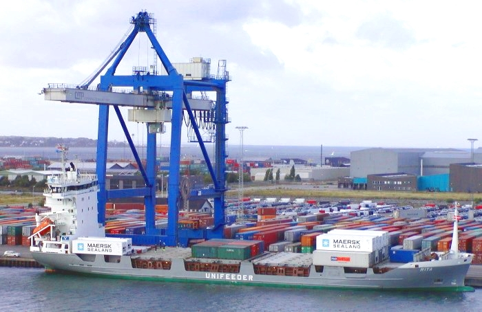

ALFARERIA : es el arte de elaborar objetos de barro o arcilla y, por extensión,
el oficio que ha permitido al ser humano crear toda clase de enseres
y artilugios domésticos a lo largo de la historia.

ALTITUD : distancia vertical que existe entre cualquier punto de la Tierra en relación al nivel del mar.
Para calcular la altitud, se toma como referencia el nivel del mar, y es por ello que la altitud
se expresa con una cifra en metros seguida de la abreviatura s. n. m., es decir, m s. n. m. (‘metros sobre el nivel del mar’).
BALSA : es una embarcación pequeña, de forma predominantemente plana,
hecha por lo común con cañas, maderos o tablas fuertemente unidas unas con otras.
También existen balsas construidas con materiales sintéticos como el PVC.
BALA : se refiere a todo proyectil de metal.
Coloquialmente, y si no se requiere precisión terminológica,
el término se utiliza para referirse al conjunto completo de cartucho con proyectil
CORTAFUEGOS : En informática, un cortafuegos (del término original en inglés firewall)
es la parte de un sistema informático o una red informática que está diseñada
para bloquear el acceso no autorizado, permitiendo al mismo tiempo comunicaciones autorizadas.

CRIMINALISTICA : La criminalística es la ciencia en la que se aplica métodos y técnicas de investigación científica
de las ciencias naturales en el examen del material sensible significativo relacionado con un presunto
hecho delictuoso con el fin de determinar, en auxilio de los órganos encargados de administrar justicia,
su existencia cierta, reconstruirlo o señalar y precisar la intervención de uno o varios sujetos en el mismo.
La criminalística se sirve de los conocimientos científicos para reconstruir los hechos.
El conjunto de disciplinas auxiliares que la componen se denominan ciencias forenses.
DECISION : Una decisión es el producto final del proceso mental-cognitivo específico de un individuo
o un grupo de personas u organizaciones, el cual se denomina toma de decisiones,
por lo tanto es un concepto subjetivo. Es un objeto mental y puede ser tanto una opinión como una regla o una tarea para ser ejecutada y/o aplicada.
DINAMICA : La dinámica es la rama de la física que describe la evolución en el tiempo de un sistema físico
en relación con los motivos o causas que provocan los cambios de estado físico y/o estado de movimiento.
El objetivo de la dinámica es describir los factores capaces de producir alteraciones de un sistema físico,
cuantificarlos y plantear ecuaciones de movimiento o ecuaciones de evolución para dicho sistema de operación.
ESTUDIO : El estudio es el desarrollo de aptitudes y
habilidades mediante la incorporación de conocimientos nuevos.
ESTIBA : Se define como estiba a la acción de colocar la carga a bordo de un buque.
Su objetivo es conseguir que sea transportada con un máximo de seguridad para el buque y su tripulación

FRENO : Un freno es un dispositivo utilizado para detener o disminuir la velocidad
de algún vehículo, generalmente, un eje, Eje de transmisión o tambor. Los frenos son transformadores de energía
FRESADORA : Una fresadora es una máquina herramienta para realizar trabajos mecanizados por arranque de
viruta mediante el movimiento de una herramienta rotativa de varios filos de corte denominada fresa.